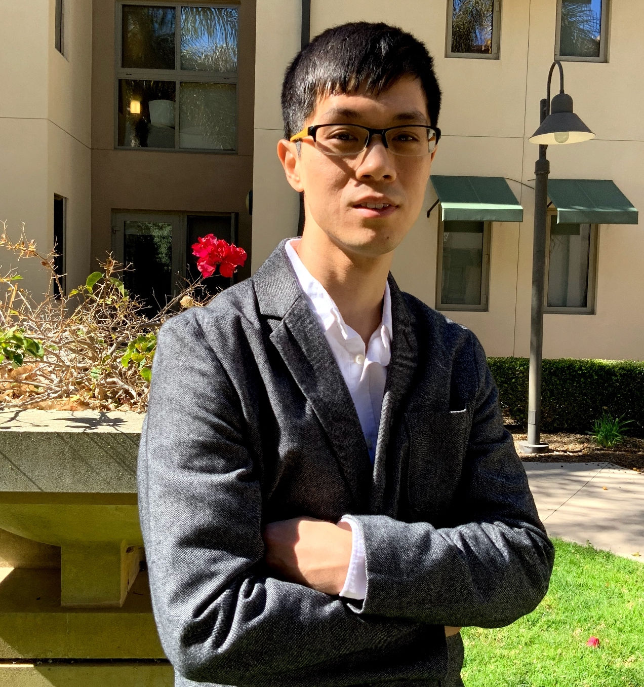

Wenhu ChenAssistant Professor at Computer Science at University of WaterlooVector Institute, CIFAR AI ChairResearch Scientist at Google Brain (20% Part-time)Email: wenhuchen [at] uwaterloo [dot] ca |
 |
{kind=link}
Research Interest
My research interest covers natural language processing, deep learning, knowledge representation and reasoning. Specifically, I aim at developing models that can ground and reason over external world knowledge to understand human language and communicate with humans. I am also interested in multi-modal problems like visual question answering and captioning.I publish and serve as program committee in ACL, NAACL, EMNLP, ICLR, NeurIPS, etc. I received the WACV best-student paper honorable mention in 2021. I also received outstanding dissertation award from UCSB in June 2021. I serve as Senior Program Committee for AAAI and Area Chair for EMNLP and AACL.
I'm always looking for talented and self-motivated students. You can drop me an email to demonstrate your interest, but the final decision won't be made until I see all the applications in the system after the official deadline.
Teaching
Preprints
-
Synthesizing Coherent Story with Auto-Regressive Latent Diffusion Models
Xichen Pan, Pengda Qin, Yuhong Li, Hui Xue, Wenhu Chen
Manuscript Report [pdf][code] -
Program of Thoughts Prompting: Disentangling Computation from Reasoning for Numerical Reasoning Tasks
Wenhu Chen*, Xueguang Ma*, Xinyi Wang, William W. Cohen
Manuscript Report [pdf][code][demo]
Publications
-
Large Language Models are few(1)-shot Table Reasoners
Wenhu Chen
EACL 2023, Dubrovnik, Croatia [pdf][code] -
Augmenting Pre-trained Language Models with QA-Memory for Open-Domain Question Answering
Wenhu Chen, Pat Verga, Michiel de Jong, John Wieting, William Cohen
EACL 2023, Dubrovnik, Croatia [pdf] -
Re-Imagen: Retrieval-Augmented Text-to-Image Generator
Wenhu Chen,Hexiang Hu, Chitwan Saharia, William W. Cohen
ICLR 2023, Kigali Rwanda [pdf] -
QA Is the New KR: Question-Answer Pairs as Knowledge Bases
William W. Cohen, Wenhu Chen, Michiel De Jong, Nitish Gupta, Alessandro Presta, Pat Verga, John Wieting (All Equal Contribution)
AAAI 2023, Senior Member Track [pdf] -
MuRAG: Multimodal Retrieval-Augmented Generator for Open Question Answering over Images and Text
Wenhu Chen, Hexiang Hu, Xi Chen, Pat Verga, William W. Cohen
EMNLP 2022, Abu Dhabi [pdf] -
Controllable Dialogue Simulation with In-context Learning
Zekun Li, Wenhu Chen, Shiyang Li, Hong Wang, Jing Qian and Xifeng Yan
Findings of EMNLP 2022, Abu Dhabi [pdf] -
HybriDialogue: An Information-Seeking Dialogue Dataset Grounded on Tabular and Textual Data
Kai Nakamura, Sharon Levy, Yi-Lin Tuan, Wenhu Chen, William Yang Wang
Findings of ACL 2022, Virtual [pdf][code] -
A Dataset for Answering Time-Sensitive Questions
Wenhu Chen, Xinyi Wang, William Yang Wang
Proceedings of NeurIPS 2021, Virtual [pdf][code] -
Local Explanation of Dialogue Response Generation
Yi-Lin Tuan, Connor Pryor, Wenhu Chen, Lise Getoor, William Yang Wang
Proceedings of NeurIPS 2021, Virtual [pdf][code] -
Counterfactual Maximum Likelihood Estimation for Training Deep Networks
Xinyi Wang, Wenhu Chen, Michael Saxon, William Yang Wang
Proceedings of NeurIPS 2021, Virtual [pdf][code] -
FinQA: A Dataset of Numerical Reasoning over Financial Data
Zhiyu Chen, Wenhu Chen, Charese Smiley, Sameena Shah, Iana Borova, Dylan Langdon, \\
Reema Moussa, Matt Beane, Ting-Hao Huang, Bryan R. Routledge, William Yang Wang
Proceedings of EMNLP 2021, Virtual [pdf][code] -
Task-adaptive Pre-training and Self-training are Complementary for Natural Language Understanding
Shiyang Li, Semih Yavuz, Wenhu Chen and Xifeng Yan
Findings of EMNLP 2021, Virtual [pdf] -
Zero-shot Fact Verification by Claim Generation
Liangming Pan, Wenhu Chen, Wenhan Xiong, Min-Yen Kan and William Wang
Proceedings of ACL 2021, Virtual [pdf][code] -
A Systematic Investigation of KB-Text Embedding Alignment at Scale
Vardaan Pahuja, Yu Gu, Wenhu Chen, Mehdi Bahrami, Lei Liu, Wei-Peng Chen and Yu Su
Proceedings of ACL 2021, Virtual [pdf][code] -
Unsupervised Multi-hop Question Answering by Question Generation
Liangming Pan, Wenhu Chen, Wenhan Xiong, Min-Yen Kan, William Wang
Proceedings of NAACL 2021, Mexico City, Mexico [pdf][code] -
Open Question Answering over Tables and Text
Wenhu Chen, Ming-wei Chang, Eva Schlinger, William Wang, William Cohen
Proceedings of ICLR 2021, Virtual [pdf][data and code] [codalab][slides][talk-slides] -
Meta Module Network for Compositional Visual Reasoning
Wenhu Chen, Zhe Gan, Linjie Li, Yu Cheng, William Wang, Jingjing Liu
Proceedings of WACV 2021, Hawaii, USA [pdf][code]
(Best Student Paper Honorable Mention) -
KGPT: Knowledge-Grounded Pre-Training for Data-to-Text Generation
Wenhu Chen, Yu Su, Xifeng Yan, William Wang
Proceedings of EMNLP 2020, Punta Cana, Dominican [pdf][data and code][slides] -
HybridQA: A Dataset of Multi-Hop Question Answering over Tabular and Textual Data
Wenhu Chen, Hanwen Zha, Zhiyu Chen, Wenhan Xiong, Hong Wang, William Wang
Findings of EMNLP 2020 [pdf][data and code][codalab][website] -
Logic2Text: High-Fidelity Natural Language Generation from Logical Forms
Zhiyu Chen, Wenhu Chen, Hanwen Zha, Xiyou Zhou, Yunkai Zhang, Sairam Sundaresan, William Wang
Findings of EMNLP 2020 [pdf][data and code] -
Logical Natural Language Generation from Open-Domain Tables
Wenhu Chen, Jianshu Chen, Yu Su, Zhiyu Chen and William Wang
Proceedings of ACL 2020, Seattle, USA [pdf][data and code][codalab][slides] -
Few-shot NLG with Pre-trained Language Model
Zhiyu Chen, Harini Eavani, Wenhu Chen, Yinyin Liu and William Wang
Proceedings of ACL 2020, Seattle, USA [pdf][data and code] -
VIOLIN: A Large-Scale Dataset for Video-and-Language Inference
Jingzhou Liu, Wenhu Chen, Yu Cheng, Zhe Gan, Licheng Yu, Yiming Yang, Jingjing Liu
Proceedings of CVPR 2020, Seattle, USA [pdf][data and code] -
TabFact: A Large-scale Dataset for Table-based Fact Verification
Wenhu Chen, Hongmin Wang, Jianshu Chen, Yunkai Zhang, Hong Wang, Shiyang Li, Xiyou Zhou and William Wang
Proceedings of ICLR 2020, Addis Ababa, Ethiopia [pdf][website][data and code][codalab][slides] -
Generative Adversarial Zero-Shot Relational Learning for Knowledge Graphs
Pengda Qin, Xin Wang, Wenhu Chen, Chunyun Zhang, Weiran Xu, William Wang
Proceedings of AAAI 2020, New York, US (Oral) [pdf][blog][code] -
Enhancing the Locality and Breaking the Memory Bottleneck of Transformer on Time Series Forecasting
Shiyang Li, Xiaoyong Jin, Yao Xuan, Xiyou Zhou, Wenhu Chen, Yu-Xiang Wang, Xifeng Yan
Proceedings of NeurIPS 2019, Vancouver, Canada [pdf] -
Interpreting and Improving Deep Neural SLU Models via Vocabulary Importance
Yilin Shen, Wenhu Chen, Hongxia Jin
Proceedings of INTERSPEECH 2019, Graz, Austria (Oral) [pdf] -
Semantically Conditioned Dialog Response Generation via Hierarchical Disentangled Self-Attention
Wenhu Chen, Jianshu Chen, Pengda Qin, Xifeng Yan and William Wang
Proceedings of ACL 2019, Florence, Italy [pdf][code] -
Global Textual Relation Embedding for Relational Understanding
Zhiyu Chen, Hanwen Zha, Honglei Liu, Wenhu Chen, Xifeng Yan and Yu Su
Proceedings of ACL 2019, Florence, Italy [pdf][code] -
Mining Algorithm Roadmap in Scientific Publications
Hanwen Zha, Wenhu Chen, Keqian Li and Xifeng Yan
Proceedings of KDD 2019, Alaska, USA (Oral) [pdf][blog][video][code] -
How Large A Vocabulary Does Text Classification Need? A Variational Approach on Vocabulary Selection
Wenhu Chen, Yu Su, Yilin Shen, Zhiyu Chen, Xifeng Yan and William Wang
Proceedings of NAACL 2019, Minneapolis, USA (Oral) [pdf][code][slides] - XL-NBT: A cross-lingual Neural Belief Tracking Framework
Wenhu Chen, Jianshu Chen, Yu Su, Xin Wang, Dong Yu, Xifeng Yan and William Wang.
Proceedings of EMNLP 2018, Brussels, Belgium [pdf][code][blog] - Triangular Architecture for Rare Language Translation
Shuo Ren, Wenhu Chen, Shujie Liu, Mu Li, Ming Zhou and Shuai Ma.
Proceedings of ACL 2018, Melbourne, Australia (Oral) [pdf][slides][blog] - No Metrics Are Perfect: Adversarial Reward Learning for Visual Storytelling
Wenhu Chen*, Xin Wang*, Yuan-Fang Wang and William Wang (*Equal)
Proceedings of ACL 2018, Melbourne, Australia (Oral) [pdf][code][blog][slides] - Variational Knowledge Graph Reasoning
Wenhu Chen, Wenhan Xiong, Xifeng Yan, William Wang.
Proceedings of NAACL 2018, New Orleans, CA (Oral) [pdf][slides][data][blog][video] - Generative Bridging Network in Neural Sequence Prediction
Wenhu Chen, Guanlin Li, Shuo Ren, Shujie Liu, Zhirui Zhang, Mu Li, Ming Zhou.
Proceedings of NAACL 2018, New Orleans, CA [pdf][poster] - Video Captioning via Hierarchical Reinforcement Learning
Xin Wang, Wenhu Chen, Jiawei Wu, Yuan-fang Wang, William Wang.
Proceedings of CVPR 2018, Salt Lake City, UTAH [pdf][blog] - Guided alignment training for topic-aware neural machine translation
Wenhu Chen, Evgeny Matusov, Shahram Khadivi, JT Peter.
Proceedings of AMTA 2016, Austin, TX (Oral) [pdf][openNMT] - Facial Emotion Recognition Using PHOG and a Hierarchical Expression Model
Zhao Zhong, Gang Shen, Wenhu Chen.
Proceedings of INCos 2013, XI`AN, CHINA [pdf]
2023
2022
2021
2020
2019
2018
Before 2018
Thesis
-
Accessing Diverse Web Knowledge with Natural Language Interface
Wenhu Chen
PhD dissertation at University of California, Santa Barbara [pdf]
Students
- Xichen Pan (BS: SJTU)
- Tianle Li (BS: HKUST)
Awards
- 2022: Canada CIFAR AI Chair
- 2021: UCSB CS Outstanding Dissertation Award
- 2021: WACV Best Student Paper Honorable Mention
- 2018: Tencent AI Gift Award
- 2016: IDEA Research Grant
Services
- Program Committee: NAACL, ACL, EMNLP, ICML, NeurIPS, ICLR
- Session Chair: NAACL 2021, EMNLP 2020
- Area Chair: AACL 2022, EMNLP 2022, EACL 2023
- Senior Program Committee: AAAI 2022
Talks
-
Building Retrieval-Grounded Text-to-Image Generation [pdf]
- Colloquium at Fudan NLP Lab, Dec 2022
- Colloquium at MLNLP, Oct 2022
-
Building Semi-parameteric Language Models to integrate World Knowledge [pdf]
- Colloquium at UC Santa Cruz, April 2022
- Colloquium at MLNLP, March 2022
- Colloquium at Vector Institute (Endless Summer School), March 2022
-
Accessing Diverse Web Knowledge with Natural Language Interface [slides]
- PhD Defense, June 2021 -
Knowledge-Grounded Natural Language Processing [slides][video]
- Invited Talk at University of Hong Kong, March 2021
- Invited Talk at National University of Singapore, March 2021
- Invited Talk at Texas A&M University, March 2021
- Invited Talk at University of Waterloo, March 2021
- Invited Talk at Washington University in St. Luis, March 2021
- Invited Talk at Google Research, Feb 2021
- Invited Talk at Allen Institute of Artificial Intelligence, Feb 2021
- Invited Talk at Vanderbilt University, Feb 2021
- Invited Talk at University of Sydney, Jan 2021
- Invited Talk at Toyota Technological Institute at Chicago, Jan 2021
- Invited Talk at Hong Kong University of Science and Technology, Dec 2020
-
Natural Language Learning with Formal Semantics [pdf]
- PhD Qualification Talk in Oct, 2019 -
Fact Verification with Semi-Structured Knowledge [slides]
- FEVER Workshop Talk in Nov, 2019 -
Generating Structured Form with Sequence-to-Sequence Network [slides]
- Reading Group of UCSB NLP Group in Nov, 2019